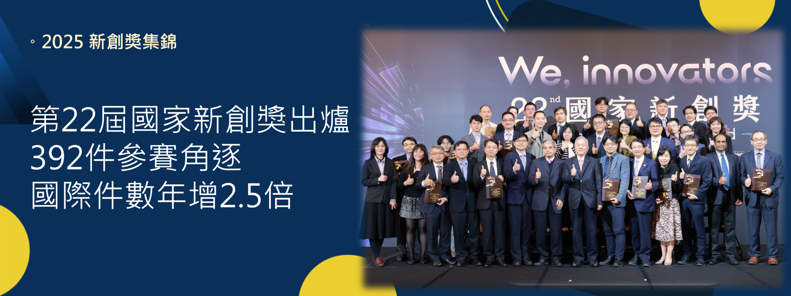

法規與認證
國際認可的證據力



🏆
政府補助國科會萌芽計畫等每一項數字都來自真實臨床研究與運行紀錄——不是承諾，是已經發生的結果。
早期腫瘤敏感度
敏感度（1,473 例）
特異度（1,473 例）
揪回漏診病例
研究團隊的成果發表於國際頂尖醫學期刊。
深度學習自 CT 早期偵測胰臟癌，奠定全自動化判讀的學術基礎。
PubMed 檢索 ↗涵蓋醫療影像分析、胰臟癌偵測方法與進階影像分析架構。
| 編號 | 地區 | 專利號 | 保護主題 |
|---|---|---|---|
| 1 | US | 11,424,021 | 醫療影像分析系統 |
| 2 | US | 11,684,333 | 醫療影像分析系統 |
| 3 | US | 12,067,717 | ML 識別胰臟癌方法 |
| 4 | US | 12,106,473 | ML 識別胰臟癌方法 |
| 5 | TW | TWI745940 | 進階影像分析架構 |
| 6 | TW | TWI767439 | 醫療影像分析系統 |
| 7 | TW | TWI776716 | ML 識別胰臟癌方法 |
| 8 | TW | TWI790788 | ML 識別胰臟癌方法 |
| 9 | TW | TWI918507 | 進階影像分析架構 |
| 10 | TW | TW202609795A | 進階影像分析架構 |
